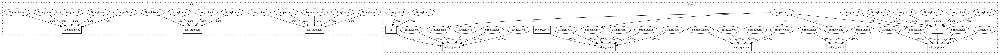

1a84f280b54dd9435da248ecd0cbe8ea2c44b6b4,cnvlib/commands.py,,,#,681
Before Change
P_diagram = AP_subparsers.add_parser("diagram", help=_cmd_diagram.__doc__)
P_diagram.add_argument("filename", nargs="?",
help=Processed coverage data file (*.cnr), the output of the
"fix" sub-command.)
P_diagram.add_argument("-s", "--segment",
help="Segmentation calls (.cns), the output of the "segment" command.")
P_diagram.add_argument("-t", "--threshold", type=float, default=0.5,
help=Copy number change threshold to label genes.
[Default: %(default)s])
P_diagram.add_argument("-m", "--min-probes", type=int, default=3,
help=Minimum number of covered probes to label a gene.
[Default: %(default)d])
P_diagram.add_argument("-y", "--male-reference", action="store_true",
help=Assume inputs are already corrected against a male
reference (i.e. female samples will have +1 log-CNR of
chrX; otherwise male samples would have -1 chrX).)
After Change
return tuple(map(float, text.split(",")))
P_call = AP_subparsers.add_parser("call", help=_cmd_call.__doc__)
P_call.add_argument("segment",
help="Segmentation calls (.cns), the output of the "segment" command.")
P_call.add_argument("-m", "--method",
choices=("threshold", "clonal"), default="threshold",
help=Calling method. [Default: %(default)s])
P_call.add_argument("-t", "--thresholds",
type=csvstring, default="-1.1,-0.3,0.2,0.7",
help=Hard thresholds for calling each integer copy number, separated
by commas. Use the "=" sign on the command line, e.g.: -t=-1,0,1
[Default: %(default)s])
P_call.add_argument("--ploidy", type=int, default=2,
help="Ploidy of the sample cells. [Default: %(default)d]")
P_call.add_argument("--purity", type=float,
help="Estimated tumor cell fraction, a.k.a. purity or cellularity.")
P_call.add_argument("-g", "--gender",
choices=("m", "male", "Male", "f", "female", "Female"),
help=Specify the sample"s gender as male or female. (Otherwise
guessed from chrX copy number).)
P_call.add_argument("-y", "--male-reference", action="store_true",
help=Was a male reference used? If so, expect half ploidy on
chrX and chrY; otherwise, only chrY has half ploidy. In CNVkit,
if a male reference was used, the "neutral" copy number (ploidy)
In pattern: SUPERPATTERN
Frequency: 3
Non-data size: 11
Instances
Project Name: etal/cnvkit
Commit Name: 1a84f280b54dd9435da248ecd0cbe8ea2c44b6b4
Time: 2015-07-08
Author: eric.talevich@gmail.com
File Name: cnvlib/commands.py
Class Name:
Method Name:
Project Name: etal/cnvkit
Commit Name: 1a84f280b54dd9435da248ecd0cbe8ea2c44b6b4
Time: 2015-07-08
Author: eric.talevich@gmail.com
File Name: cnvlib/commands.py
Class Name:
Method Name:
Project Name: etal/cnvkit
Commit Name: 29db4abdbeb839340ac5b0caf934ebda93892934
Time: 2017-02-24
Author: eric.talevich@gmail.com
File Name: cnvlib/commands.py
Class Name:
Method Name:
Project Name: etal/cnvkit
Commit Name: 8c9c03c9c7814a9d1d76e87788766ddc36ef7239
Time: 2015-11-07
Author: eric.talevich@gmail.com
File Name: cnvlib/commands.py
Class Name:
Method Name: